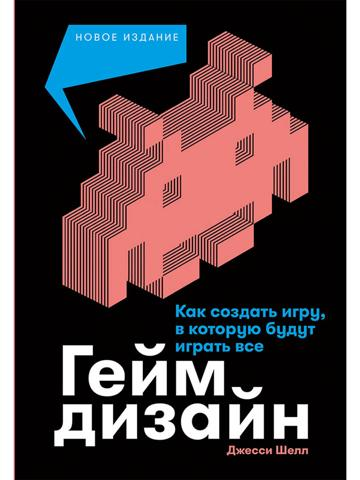
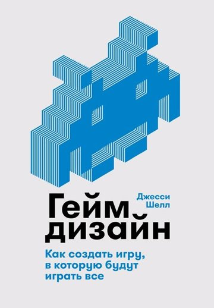
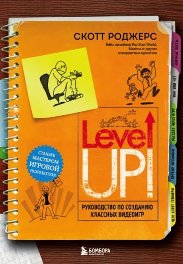
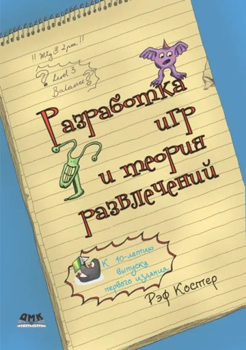
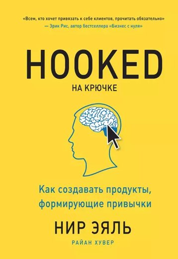

По словам Максима (28.10.2026), Слава советовал «Game Balance» — Ian Schreiber, Brenda Romero (CRC Press / Routledge, 2021). Её карточка первая. Ниже — остальные кандидаты, которых мы проверяли, пока название было неизвестно; они остаются для справки.
CRC Press / Routledge, 2021, ~800 с., ISBN 978-1-4987-9957-7 (на русском не нашли)
Кривые стоимости и наград, дефицит в F2P, стены, случайность, аналитика. Разбор по главам — библия, раздел 17.
Это та книга: со слов Максима 28.10.2026.

Альпина Паблишер, 2026
Линзы дизайнера, кривая интереса, любопытство. Чёрная обложка с красно-коралловым инвейдером: ближе всех к «красной».
Почему могла быть советом: Главный учебник; в мобильном F2P его линзы цитируют чаще всего.

Альпина Паблишер, 2019
Тот же текст; обложка белая с синим инвейдером.
Почему могла быть советом: То же, что выше.

Бомбора, 2023 (2-е издание)
Практика уровней, темпа, боссов; «маячки» (weenies) из Диснейленда. Оранжевая обложка, красные акценты.
Почему могла быть советом: Прямо про маячки: цепочка ориентиров ведёт игрока.
Питер
Автор RimWorld: эмоции игрока, системы, истории. Чёрная обложка с улитками.
Почему могла быть советом: Популярна у системных дизайнеров.

ДМК Пресс, 2018
Веселье как обучение паттернам. Жёлтый блокнот на синем.
Почему могла быть советом: Классика «почему игра скучнеет».

МИФ, 2017
Модель «крючок»: триггер, действие, награда, вклад. Жёлтая обложка.
Почему могла быть советом: Про привычки и возвращение игроков.
Бомбора/Эксмо
Истории разработки игр, не учебник дизайна. Другой автор, не Шрайбер из «Game Balance».
Почему могла быть советом: Скорее для вдохновения.
New Riders, 2013 (на русском не нашли)
Экономика F2P-игр.
Почему могла быть советом: Про деньги в F2P.
Обложки с сайтов издательств и магазинов; только для опознания. Внутренний материал Multicast, не распространять.